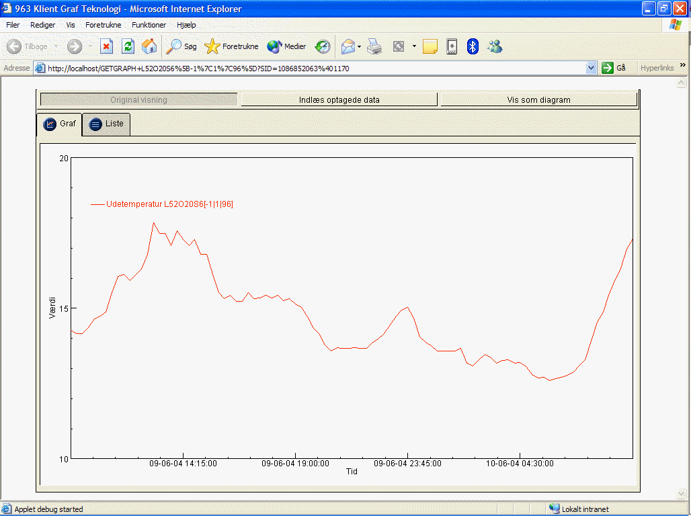

Normalt sendes logget data fra undercentralen i kompakt format for at spare på kommunikationer. Desværre går noget af nøjagtigheden tabt derved. Præcisionsgrafer derimod sikrer fuldkommen nøjagtighed, men modtagelsen tager længere tid. Man kan se præcisionsgrafers data logget i IQ-undercentraler. Hver graf kan bestå af op til 5 kurver og kan vise op til 1000 værdier på hver kurve.
Hvis der bedes om en præcisionslog, sender undercentralen hver værdi i logkanalen som et individuelt 6-cifret nummer. Dermed får man større nøjagtighed men et mindre antal af værdier (999 999 til –99 999 eller ,00001 til -,0001). Mere vigtigt er, at overførselshastigheden er meget langsommere. Derfor kan brugere begrænse antallet af punkter, der indhentes for en total-præcisionslogsamling, og bør ikke bruge denne metode for at indhente 1-sekunds logger. Denne metode bør altid bruges for måleraflæsninger, da der ikke forekommer tab af rådata.
Sådan vises præcisionsgrafdata logget på en undercentral:
1 Vis siden, der indeholder den værdi, for hvilken logget data skal indsættes på en graf.
2 Højreklik på den værdi, der skal indsættes på en graf, og vælg ‘Indhent hele præcisionsloggraf(er)’ fra den fremkomne menu for at se grafen.

Man kan forstørre og formindske grafen for at gøre det lettere at se data. Grafdata kan vises som en punktliste, og registrerede grafer kan indlæses.
Bemærk: Denne funktion er kun tilgængelig, hvis man bruger Microsoft Internet Explorer version 4.02 eller senere eller Netscape version 6.1 eller senere.